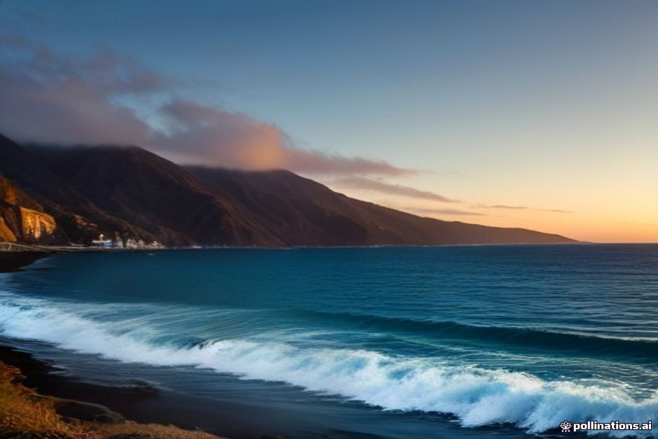
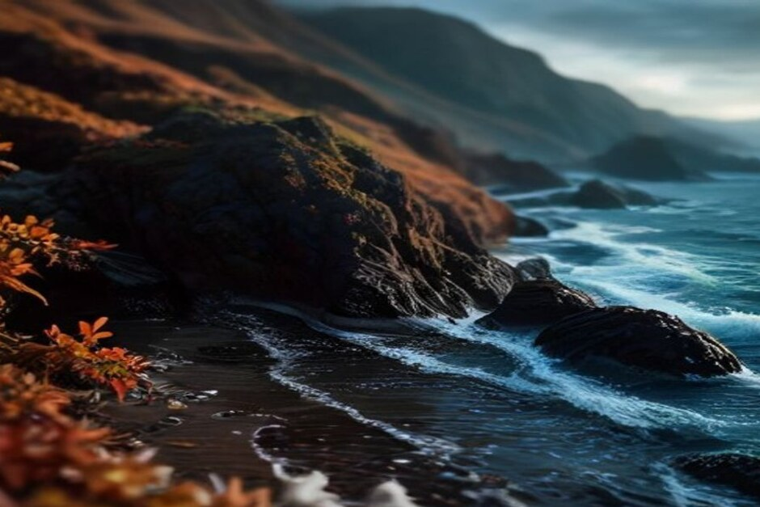

Pregunta a un local cuándo visitar Madeira y sorprendentemente muchos dirán que en otoño, no en verano. De septiembre a noviembre se cambia algo del calor de plena temporada por el mar más cálido del año y una afluencia de gente notablemente menor. Esto es lo que ofrece realmente la temporada, mes a mes.
¿Hace calor en Madeira en otoño?
Sí. En Funchal, las máximas diurnas rondan los 25°C en septiembre, bajan a unos 23°C en octubre y 20°C en noviembre, con noches que raramente caen de los 15°C incluso avanzada la temporada. Como Madeira está en pleno Atlántico, frente al norte de África, su "otoño" se parece más a un final de verano que se estira suavemente que a un descenso estacional real — el pantalón corto y el bañador siguen teniendo sentido la mayoría de los días, con una capa ligera para las noches.

¿Está el mar lo bastante cálido para bañarse en Madeira en otoño?
Está más cálido que en verano, no más frío. El Atlántico en torno a Madeira tarda toda la temporada en calentarse, así que en realidad alcanza su punto máximo en septiembre, en torno a los 24°C — posiblemente el mejor mes del año para bañarse en la isla. Se mantiene cerca de los 23°C durante octubre, antes de enfriarse hacia niveles invernales de unos 18-19°C a finales de noviembre. Esa larga cola de calor es precisamente la razón por la que nuestro Day Trip mantiene sus paradas de baño en Fajã dos Padres y Ribeira Brava totalmente vigentes durante todo el otoño, sin el matiz de "agua fresca" que sí daríamos a una reserva de enero.
¿Llueve mucho en Madeira en otoño?
No en septiembre ni en octubre — ambos meses siguen siendo en gran medida secos y soleados en la costa sur, una prolongación del patrón veraniego más que una ruptura con él. El cambio empieza en noviembre, cuando llegan los primeros frentes atlánticos de la temporada más lluviosa de Madeira; incluso entonces, los chubascos suelen ser breves, lejos de la lluvia gris y continua del pleno invierno. Como siempre en la isla, la costa sur, en torno a Funchal y Câmara de Lobos, se mantiene más seca y soleada que la costa norte (Santana, São Vicente, Porto Moniz), así que conviene reservar las excursiones a la costa norte para los días que se presenten más despejados.

¿Qué se puede hacer en Madeira en otoño?
El inicio del otoño es temporada de vendimia. A finales de septiembre llega la vendimia y las fiestas del vino en torno a Câmara de Lobos y Estreito de Câmara de Lobos, con pisado de uva, catas y música ligadas a la tradición del vino de Madeira. Octubre suma una semana de festival al aire libre repartida por varios municipios — rutas de senderismo guiadas, barranquismo, ciclismo de montaña y trail running en la calma de la temporada baja, junto al calendario habitual de fiestas patronales locales y mercados de pueblo que continúan durante toda la temporada. Nada de esto requiere planificación previa para disfrutarlo desde la costa; es más bien un extra que se suma a un viaje pensado en torno al agua y a las montañas.
¿Qué llevar en un viaje de otoño a Madeira?
Ropa de verano más una capa de abrigo. Un bañador y ropa ligera cubren la mayoría de los días hasta octubre, pero conviene llevar un chubasquero plegable para noviembre y una prenda más de abrigo para las noches y para cualquier zona de montaña — Pico do Arieiro y Pico Ruivo se enfrían bastante antes que la costa según avanza la temporada. El calzado con buen agarre es importante si vas a caminar por las levadas después de la lluvia, ya que los senderos se vuelven resbaladizos rápidamente.
¿Es el otoño la mejor época para visitar Madeira?
Para muchos viajeros, sí — sobre todo septiembre. Combina el mar más cálido del año con una afluencia que ya se ha reducido tras el pico de julio y agosto, así que los miradores, restaurantes y plazas en barco son más fáciles de conseguir sin esperar semanas. Octubre conserva la mayor parte de ese atractivo, con un aire algo más fresco y mejores condiciones para el senderismo. Noviembre es el mes de compromiso: todavía suave y todavía apto para el baño al principio, pero el riesgo de lluvia aumenta y empieza a sentirse más como una transición hacia el invierno que como una temporada propia. Si tu viaje gira en torno al tiempo en el agua, septiembre y octubre son realmente difíciles de superar — mejores temperaturas del mar que en invierno, mejor disponibilidad que en agosto, y luz de sobra para un paseo en barco por la tarde a lo largo de la costa.
El verano se lleva las multitudes. El otoño, en silencio, se queda con la mejor agua del año.
Sea cual sea la semana en que llegues, conviene consultar la previsión con uno o dos días de antelación en lugar de fiarse de una media estacional — los microclimas de Madeira hacen que la diferencia entre una mañana gris y una dorada pueda depender simplemente de en qué costa estés.